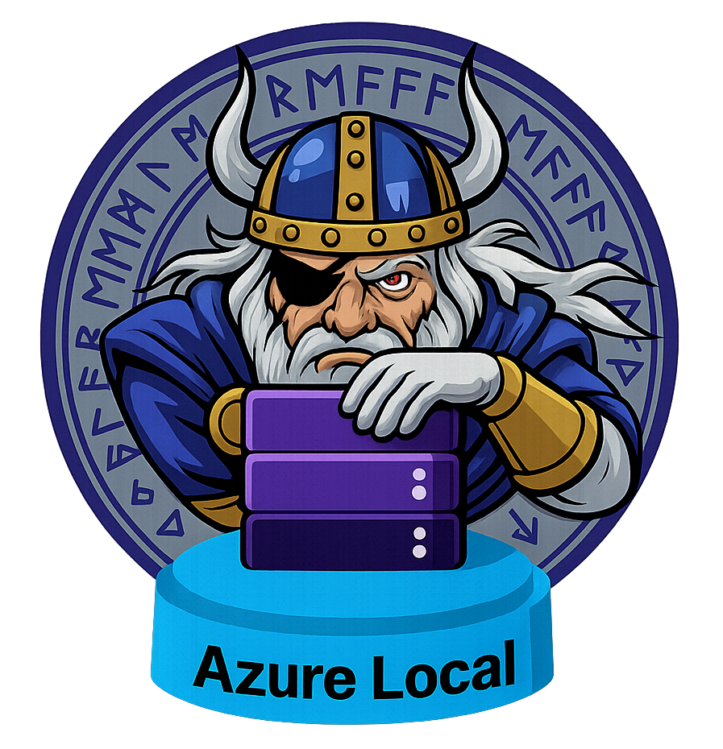

ODIN Sizer for Azure Local

Version 0.20.06 |
Calculate instance hardware requirements based on your workload scenarios and their resiliency and capacity requirements. This tool provides example hardware configurations only. Please consult with your preferred hardware OEM partner for detailed guidance and recommendations on their Azure Local solution offerings.
Visitors:
—
Designs Generated:
—
Sizes Calculated:
—
ARM Deployments:
—
Workload Scenarios
Add workloads to calculate your Azure Local instance requirements.
START HERE
View an example 3D visualization of the hardware below
△
Start by adding a workload
Click one of the workload buttons above
to size your Azure Local instance
💻 VMs
⎈ AKS Arc
🖥 AVD
Recommended Instance Configuration
Configure your instance topology and storage settings.
Tip: For business or mission-critical workloads, it is recommended to implement two separate Azure Local instances, to enable workload HA/DR capabilities between two locations, or consider a Rack-Aware Cluster deployment type.
Tip: Minimum N+1 capacity must be reserved for Compute and Memory when applying updates (ability to drain a node). Single Node instances will always incur workload downtime during updates.
Physical Node(s) - Example Hardware Configuration
Define the physical hardware specifications for each node.
CPU Configuration
Memory Configuration
GPU Configuration
Advanced Settings
Storage Configuration
Disk Configuration (Capacity)
S2D Repair Reservation
Hardware Requirements Summary
Total vCPUs
0
Total Memory
0 GB
Total Storage
0 TB
Total Workloads
0
Workload Per-Node Requirements (with N+1)
Physical Cores
0
Memory
0 GB
Raw Storage
0 TB
Usable Storage
0 TB
Capacity Usage for Workload
Azure Local Instance - Sizing Notes
- Add workloads to see sizing recommendations